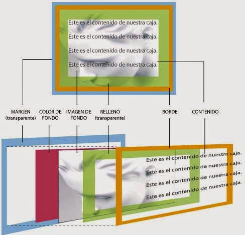

Por qué se llaman estilos en cascada
Las hojas de estilo se llaman hojas de estilo "en cascada" porque:
• Las propiedades de estilo pueden estar escritas en varios sitios (en varios lugares de la página web o de la hoja de estilo) y dependiendo del sitio, afectan a más o menos elementos.
• Cuando un elemento está contenido en otro (por ejemplo, un párrafo
dentro de una división
se le aplicarían las propiedades definidas para la división
• Dos reglas distintas pueden ser de aplicación a un mismo elemento (por ejemplo, a un párrafo
con clase nombre, le es de aplicación tanto el selector .nombre como el selector p).
Si las propiedades (escritas en diferentes sitios o para diferentes elementos) no entran en conflicto, el navegador aplica todas las propiedades. Por ejemplo, si el color de fondo de un elemento está definido en un sitio y el tamaño de letra en otro sitio, el navegador aplicará ambas propiedades al elemento. Pero si las propiedades entran en conflicto (por ejemplo, el color del fondo del elemento está definido en varios sitios con colores distintos), existen reglas para decidir qué propiedad tiene preferencia.
Breve historia de las CSS (Hojas de Estilo en Cascada) y su evolución
CSS fue implementado por W3C (World Wide Web Consortium) en 1996 como una manera para que los programadores web especificaran la apariencia visual de las páginas y sitios web que se estaban desarrollando. Su principal objetivo era separar el contenido y la estructura de un sitio web de la parte visual, algo que no había desarrollado antes de este momento. La división de la estructura y estilo permite al HTML realizar más en su trabajo en la que se pensó originalmente: el marcado del contenido, sin tener que pensar por el diseño de la página en sí, algo llamado como apariencia de la página. CSS no ganó popularidad hasta el año 2000 cuando los navegadores web iniciaron a utilizar más que que las apariencias básicas de fuente y color de este lenguaje de marcado. Hoy por hoy, todos los navegadores actuales reconocen todos los niveles desde CSS 1 hasta CSS 3. Mientras CSS evoluciona e introducen nuevos estilos, los navegadores han iniciado desarrollar módulos que permiten soporte de CSS con el objetivo de brindar a los desarrolladores web nuevas y excelentes herramientas de estilos con las que puede trabajar. Por mucho tiempo, existió un grupo de personas que negaron usar CSS para diseñar y desarrollar páginas y sitios web, pero esa práctica ha ido desapareciendo hoy en día. Este lenguaje actualmente es un estándar que es muy utilizado en el diseño web y es muy difícil actualmente que trabaje en la industria que no tenga un mínimo conocimiento de este lenguaje.

(Delgado, 08-06-2021.)https://disenowebakus.net/imagenes/articulos/aprender-css-hojas-de-estilo-en-cascada.jpg
¿Cómo funciona CSS?
CSS usa una sintaxis muy fácil basado en el inglés con unos conjuntos de normas que la conducen. Como se mencionó, HTML no fue desarrollado con el propósito de usar elementos de estilos, sino solamente para el marcado del documento. Fue desarrollado para describir el contenido, por ejemplo
Párrafo.
. Pero, ¿ cómo uno le puede aplicar un estilo al párrafo? La estructura de sintaxis CSS es muy fácil. Tiene un selector y un bloque de declaración. Primeramente uno selecciona un elemento, y posteriormente le declara lo que deseas hacer con él. Bastante fácil. Pero, existen reglas que se debe tener en cuenta. Las reglas de las estructuras son muy fáciles. El selector no es más que un elemento HTML. El bloque de declaración contiene una o más declaraciones separadas por punto y coma. Cada declaración contiene un nombre de propiedad CSS y un valor, separados por dos puntos. Una declaración CSS siempre termina con un punto y coma, y los bloques de declaración están rodeados por llaves.¿Cuáles son las maneras de implementación de CSS?
Las maneras de implementación de CSS son Inline, Externo e Interno.
Vamos a comenzar con el estilo Interno, los estilos se cargan cada vez que hay una actualización una página o sitio web, lo que puede aumentar el tiempo de carga. También no se podrá utilizar el mismos estilo CSS en múltiples páginas, porque se encuentran en una sola página. Pero tiene también sus ventajas: tener todo en una página da la facilidad de compartir la plantilla para una vista previa. La manera Externo es la más conveniente, todo se hace de manera externa en un fichero .css. Esto significa que puedes hacer todo el estilizado en un archivo separado y aplicar el CSS a cualquier página que se desea. La manera externa puede mejorar los tiempos de carga. Y por último, el estilo Inline de CSS funciona con elementos específicos; Cada componente tiene que usado, por lo consiguiente no es la mejor manera, ni la más rápida para manejar CSS.
¿Cuáles son las principales características y ventajas de las CSS?
La manera en que funciona las CSS radica en definir, a través de una sintaxis especial, la manera de presentación que se le aplica a los elementos de la página. Se puede aplicar CSS a múltiples niveles, desde un sitio web completo hasta una etiqueta pequeña. A continuación les mencionamos las principales bloques de acción.
• Una web completa, de manera que de puede establecer en un único lugar el estilo de toda la web una sola vez.
• Un fichero HTML o página en particular, se puede precisar la manera de cada uno de los bloques de contenido de una página, en una declaración que impactará a un documento de determinada web.
• Un fragmento del documento, se puede aplicar estilos de manera visible en una parte de la página, por ejemplo en la cabecera.
• Una etiqueta en particular, el cual se puede definir múltiples estilos para una etiqueta. Esto es excelente ya que le da potencia a la programación. Se puede definir, por ejemplo, múltiples tipos de párrafos: en rojo, en verde, con o sin márgenes, entre otros más.
Hasta el momento hemos visto como el poder de usar esta tecnología reluce, pero no se queda solamente ahí porque además CSS permite aplicar al fichero HTML formato de manera más exacto. Anteriormente en HTML se quedaba corto para maquetar y se tenía que utilizar trucos para conseguir los propósitos, actualmente existen múltiples herramientas que permiten definir esta forma:• Se puede definir la distancia entre líneas del documento.
• Aplicar sangrado a las primeras líneas del párrafo.
• Permite colocar elementos en la página con mayor precisión.
• Entre otros más, como decir la visibilidad de los elementos, márgenes, subrayados, tachados.
Otras de las ventajas del uso de CSS es la manera de especificar las medidas en múltiples unidades. Si HTML se podía atributos con pixeles y porcentajes, actualmente se puede definir usando múltiples unidades, como la mencionamos a continuación:• Pixels (px)
• Porcentaje (%).
• Pulgadas (in).
• Puntos (pt).
• Centímetros (cm).

(Blogspot)https://4.bp.blogspot.com/TL_2i7J15l8/VOYIoKOSIiI/AAAAAAAAApE/srxt9GHJOKQ/s640/Hojas%2Bde%2BEstilo%2Ben%2BCascada%2BCSS%2Bparte2.jpg